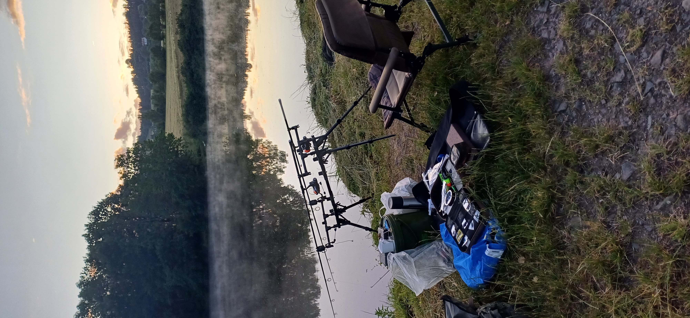

Rybaření · Vlastní fotografie
Chvíle u vody
Na ryby vyrážím s kamarádem nebo sám. Tady mám fotografie z Doks a dalších chvil u vody z let 2019, 2020 a 2024.
21 fotografií · 3 albaProhlédnout fotografie ↓

Fotografie z výprav
Doksy — září 2019


Další 3 fotografie (celkem 7)Sbalit další fotografie


Doksy — srpen 2020


Další 3 fotografie (celkem 7)Sbalit další fotografie


Léto 2024


Další 3 fotografie (celkem 7)Sbalit další fotografie



Jak vyrážím na ryby
Za sezonu se k vodě dostanu na několik výjezdů. Někdy jedu s kamarádem, jindy sám; mezi místa, kam vyrážím, patří Doksy a okolí v severních Čechách.
Fotografie jsou z mého archivu. Zachycují přípravy, čekání u prutů i úlovky.
Rybářské potřeby
Výběr rybářských potřeb a porovnání cen na Heurece.
Porovnat rybářské potřeby na Heurece ↗
Partnerský odkaz: pokud přes něj nakoupíš nebo přejdeš do obchodu, mohu získat provizi.